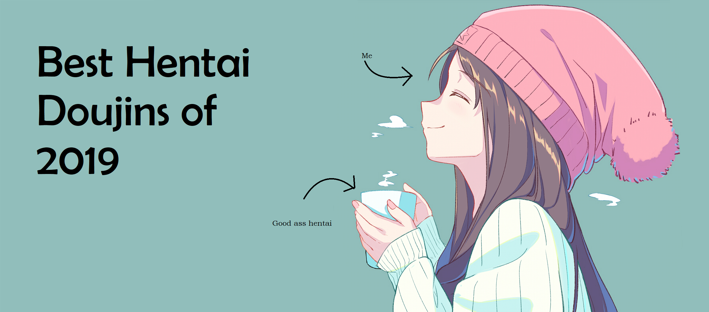
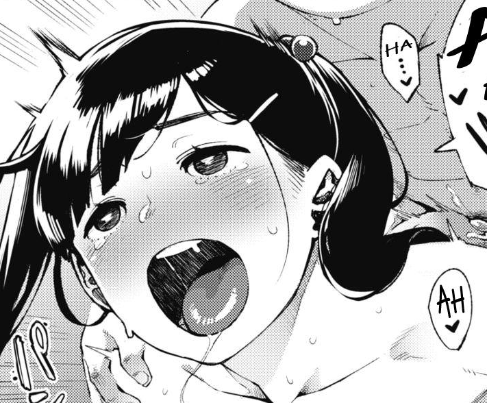
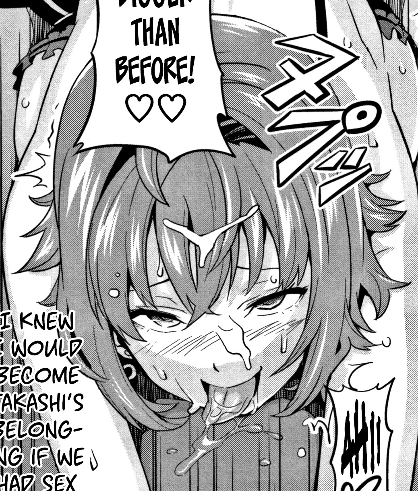
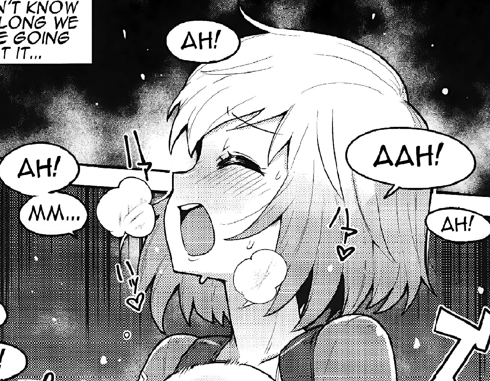
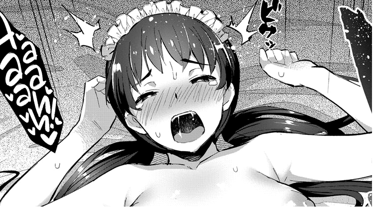
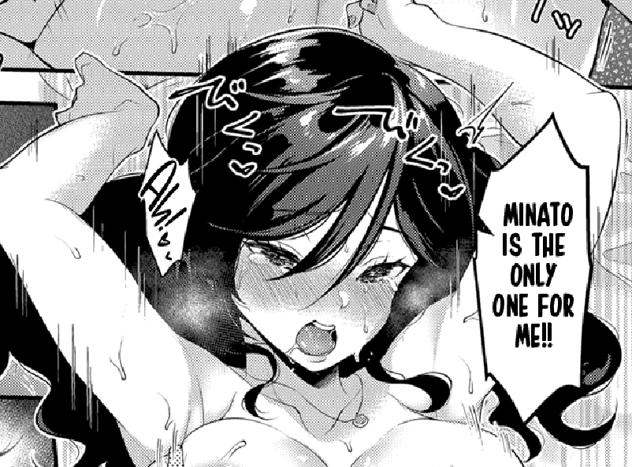
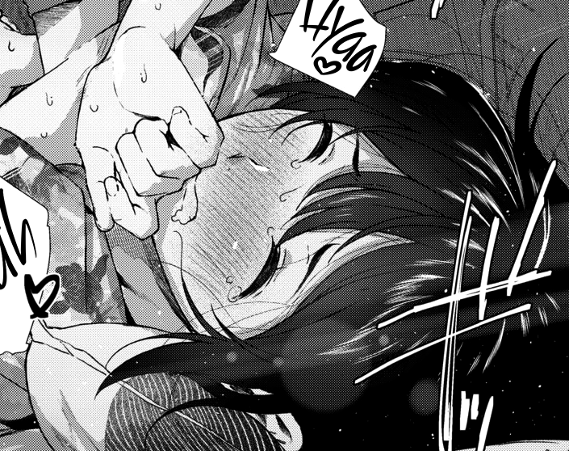
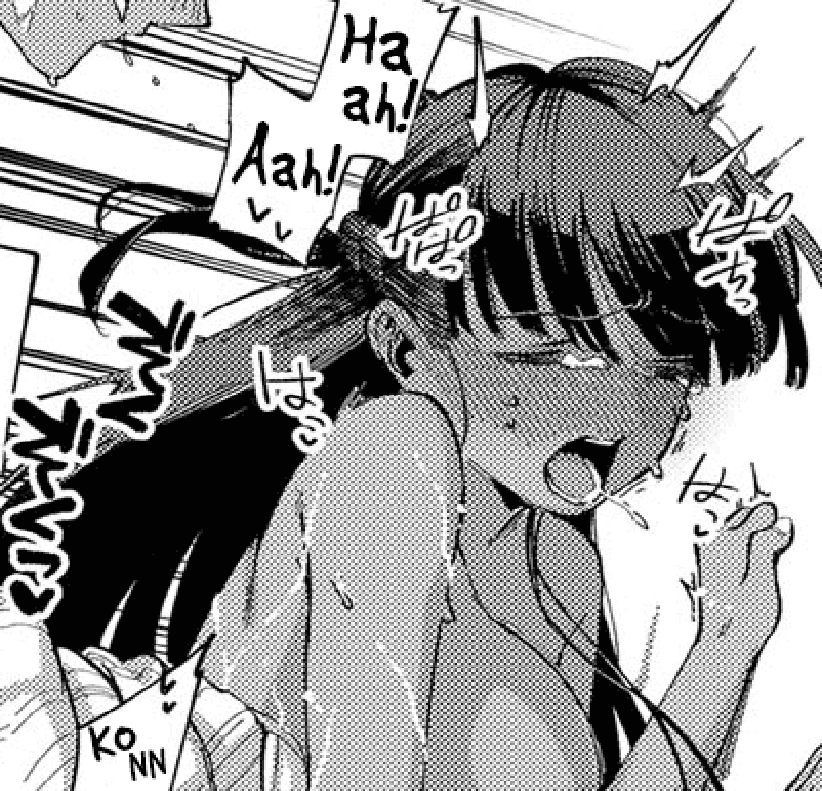
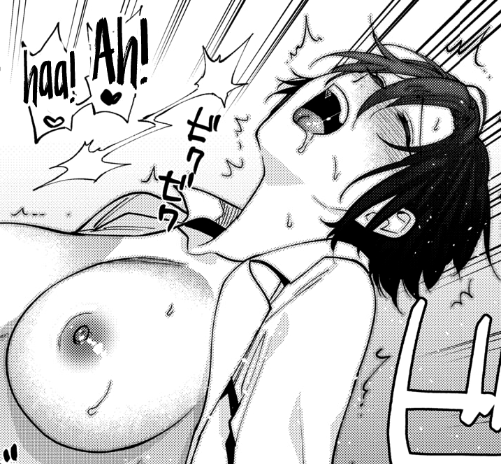

It wouldn’t make much sense to catalogue what I read if I didn’t keep an active ranking of them. This list isn’t exactly scientific and will probably be updated every weekend if it needs to be. For right now, it’s going to have some trash just because I’m not working from a huge back catalogue, but by the end of the year there should be a lot more quality than crap.
So enjoy, and keep in mind, it’s my own opinion. If you’ve got a problem, make your own list. Without further ado, please enjoy the top 10 doujins I’ve jacked to.
10 - Today Surely
I was nice to this one pretty much purely based on how technically good it is. It has great art, I just wasn’t a fan of how any of the characters look, it has a well written story that I just wasn’t into, and the character interactions are well brought to life, they just graded me. Conceptually if I was into this, it could be not only a lot higher on the list, but one that might stay around all year, but as it stands, I appreciate it, I just don’t like it that much. Sorry Rocket Monkey, you and I are just into different things.
9 - Mai Senpai to Ichatsukitai
This list is really hard to make at this point. The top three were pretty easy, I already knew the one that I wasn’t going to include but categorizing ten through four and having to make a distinction between works which are honestly pretty different is pretty challenging. Inevitability, it comes down to my taste on the day I write this. So that means that the one getting the shaft today is Bunny girl’s doujin. It’s well made, well drawn, and mostly well written (albeit mildly fumbles when it comes to Mai’s character), it’s hard to put it above anything that I felt has some real passion behind it. While most of the works above it may have just as much technical prowess at play, this one feels more like it’s capitalizing on the trend of bunny girl rather than trying to get a story out that the author wanted to tell. Still great, but lacking in spark.
8 - Tsundero 1 & 2
These pieces are shining examples of how one aspect of a work can make the whole thing worth reading. The story isn’t great and other than me having a love for a the type of girl featured in the story, the characters aren’t anything to write home about, but damn if Takeda isn’t killing the aheago game. He is able to make great use of energetic poses and facial expressions to make this one that I had a lot of fun with. Just goes to show sometimes all it takes is to stick your tongue out and roll your eyes back to make me like your work.
7 - Memory Impact
My initial review of this work was harsh. However, the work itself is a blast. It’s got a lot of personality with a cute art style and character interactions. It’s above average in about every aspect, but that’s why it’s not higher on the list. It’s not something I will likely be going back to any time soon, but it is something I’m glad I read. You did good Memory Impact, you did good.
6 - Gwenpool Etchina sekai ni o jama shimasu
It’s always nice to see American properties getting adapted by doujin artists. They’re weirdly overlooked in favor of making another Fate book, but when they are explored we get something special like our number 6 spot: Gwenpool. The character of Gwen is pretty well maintained and it even incorporates the page hopping gag from the last issue of the comic. The love really comes out in the art however, this comic feels like Gurihiru just illustrated it themselves. I haven’t read a lot of BowieKnife’s other work, but this has got me intrigued.
5 - Boy meets Maid
it’s weird for me that a maid doujin is this high. The only one other than this one that I really liked was the one where the chick looked like the woman from Beelzebub, but now I’m off track. This works because the maid and butler have chemistry and good personalities, and the parent trap-esque ruse the person they work for is great too. Twintails get me going, and the art is wonderful to look at. Not much else I can say, this got me to like a maid doujin, which in my book, makes it pretty damn good.
4 - Yappari Kimi ga Suki
Ok, this one is just adorable. It’s this high purely because it was so sweet it gave me diabetes. I’m a big fan of the “alcohol induced sharing of how much they love the person” trope in manga, but this one just works so well with how precious the main girl is and how seemingly nice the guy is. The art is amazing as well, making me feel like I’m wrapped in a blanket every time I look at it. Overall, I love this one for being the fantastically drawn vanilla-fest it doesn’t try not to be. God bless.
3 - Natsu tu Jun
From a technical perspective, this one probably hits the highest marks on the whole list. It’s art is gorgeous, the story is gripping, and the characters have such cute chemistry that you can’t help but love it. The art isn’t exactly my cup of tea, but I can appreciate it all the same. If your heart doesn’t melt when she smiles on page fifteen, then I’m sorry we can’t be friends. Everything above this is there purely based on personal preference, because this is rocking straight tens in every category.
2 - RESORT LOVER
If I’m being honest with myself, this work shouldn’t be this high. The art is fantastic, but the characters aren’t anything to write home about, along with a story that holds together but isn’t groundbreaking. Why do I love it so much? No idea. Maybe it’s just that it has all of my favorite things: dark skinned beauties, a picturesque beach setting, a assertive main girl, a satisfying adorable ending. It panders to me to such a point that my subconscious didn’t become a doujin author and make this. It’s this high because for me it filled me with that much joy, and if you don’t like that that’s fine, just let me enjoy my dark skinned ahegao.
1 - Muramatasan no Himitsu
This work is amazing. It has some of the best character interactions I’ve seen in hentai, with likeable main characters and god tier art. I can’t stress enough how much I liked to see these characters bounce off one another, it’s fantastic. The incorporation of the split tongue isn’t only crazy hot when she uses it in the manga but adds some depth to her character that helps us get to know her better. I just love this one to pieces. It’s not only got a short haired female protagonist, but she’s funny and adorable too? Sign me the hell up. I’d read this if there wasn’t any sex in it, but that part is just as amazing and well-drawn as all the other parts. Amazing from start to finish, started my year off right.